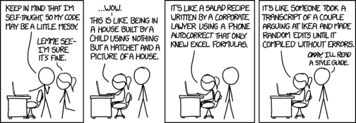

CS 124, Fall 2021
Lab 9: Classes and Objects
For this lab, you will write two complete classes, and you will complete a main program that uses those classes. The program will use Midi to play short tunes. In addition to the classes that you write, the program will use a class named SimpleSynth that provides a simplified interface to Java's Midi support. This lab might also teach you some things about packages, testing, and error-handling.
You will need a copy of the file SimpleSynth.java, which must be inside a folder named midi because the SimpleSynth class is in a package named midi. You will also need a copy of MidiPlayer.java, which is the incomplete main program that you will work on. MidiPlayer.java is in the default package, and should be copied directly in the src folder of your project. You will probably also want copies of three short programs in the default package: TestMidi.java, TestNote.java, and TestTune.java. You will not do any work on these three programs, but they can be used to test various aspects of the project, as discussed below. Note that MidiProgram, TestNote.java, and TestTune.java will have errors until you have written the Note and Tune classes that they use. All of these files can be found in /classes/cs124_Eck/lab9-files or downloaded from the web. Since there are a lot of files, you also have the option of downloading this zip archive and extracting its contents to get all the files.
You should turn in your work for the lab in a folder named "lab9" or "lab9-files" or something similar. It can be a complete Eclipse project folder, but does not have to be. The work that you turn in must include these three files: Note.java, Tune.java, and MidiPlayer.java. These files must work with the original version of SimpleSynth.java, which must be in package midi. Do not modify SimpleSynth.java or move it out of package midi.
This lab should be due in a week — however, because of the test next Monday, it will not be collected until Friday, November 5.
About Midi and SimpleSynth
MIDI (Musical Instrument Device Interface) was designed as a way for computers to control musical instruments. Midi can also be used to control a "synthesizer" that is part of the sound card on a computer. A synthesizer can play notes through the computer's speakers that imitate the sounds of various instruments. Midi has a set of 128 standard "instruments", although not all of them sound realistic and some of them don't actually imitate instruments as such. Also, some with different names sound the same to me. I expect it all depends on the sound card. The instruments are often numbered from 1 to 128 in the documentation, but in Midi programs, they are actually numbered from 0 to 127. A Midi instrument is specified by an integer in the range 0 to 127.
One can do some complex things with Midi, but it supports very simple uses with a few commands for turning particular notes on and off, for selecting the volume, and for selecting the instrument that is used. (It is possible to have several different instruments playing different notes at the same time, but we won't be doing that.) Like instruments, the possible notes are identified by numbers in the range from 0 to 127, and the possible volumes are also numbered 0 to 127. Note number 60 is "Middle C" (the middle key on a piano keyboard). There are 12 notes to an octave, so going up an octave means adding 12 to the note number.
The file SimpleSynth.java defines a simple interface to some of the most basic Midi capabilities. A program really only needs one synthesizer, but nevertheless, you need an object of type SimpleSynth to represent the synthesizer. If synth is that object, then you can call synth.noteOn(noteNumber) and synth.noteOff(noteNumber) to turn particular notes on and off. (It is possible to have several notes playing at the same time, but only on the same instrument.) You can use synth.setVolume(volumeNumber) to control volume and synth.setInstrument(instrumentNumber) to select the instrument. There are a few static named constants such as SimpleSynth.PIANO and SimpleSynth.TIMPANI that give the instrument numbers for some common instruments that should sound OK. There is also a static method SimpleSynth.getNameForInstrument(N) that returns the official name for a given instrument number. Read the Javadoc comments in SimpleSynth.java for more information! The source code includes a complete list of instrument names.
To play a note, you have to turn a note on, wait a while, and then turn the note off. There is a standard method Thread.sleep(n) that implements a pause of n milliseconds. (One thousand milliseconds equal one second.) You can use Thread.sleep() to implement "wait a while", but it can throw a funny exception that has to be caught, even though it will never happen in this program. So the code for delaying by n milliseconds is
try {
Thread.sleep(n);
}
catch (InterruptedException e) {
}
You would put this code between calls to synth.noteOn(noteNumber) on synth.noteOff(noteNumber) to play a note. Or use it by itself to implement a period of silence. See the sample program TestMidi.java for an example of playing notes — and run it to see what it does. This will test the Midi system on your computer. If you don't hear anything, make sure that the volume on your computer is not turned completely off. TestMidi plays no other role in this lab.
About the Program
The main program for this lab, MidiPlayer.java, uses two classes that you will write, Note and Tune, to implement playing tunes using Midi. You can't work on the main program until you have written those classes, but you should know what the program is expected to do.
The main program that you will work on will accept and carry out commands from the user. The commands will let the user create and play tunes, and select the volume and instrument that are used to play them. The tunes are played using Midi. The program is a simple command-line program, not a GUI program. The user types in commands, and the computer responds, either by carrying out the command or by reporting an error in the command. The program should never crash. A command is one line of input from the user, containing the command itself followed by any data that the command requires. Here are the commands that you will implement:
- play — This command must be followed by a list of integers in the range -1 to 127 representing Midi note numbers, except that -1 is used to represent a pause. The program should play the tune consisting of those notes and it should record the tune so that it can be replayed. The notes can all be of the same duration. Note that only the most recently played tune is saved, so the program only has to keep track of one played tune.
- random — Create a random tune and save it to be replayed. No data needed. Information about random tunes is at the end of this web page.
- replay — Play the tune that was most recently played and saved, either by the play command or by the random command. No data needed.
- volume — Change the volume in the Midi synthesizer. The data is a single number giving the new volume level.
- instrument — Change the instrument in the Midi synthesizer. The data is a single number giving the Midi instrument.
You must implement at least this functionality. You can add other features if you want, possibly for extra credit, such as the ability to specify instruments by name as well as by number or data for the random command that will specify parameters for the random tune that is produced. I'm sure you can think of other possibilities.
Here is a complete run of my program. The computer prompts the user with ">>", and the program ends when the user inputs an empty line. User input is shown in bold. Some of the possible errors are illustrated.
Enter your commands at the '>>' prompt. Enter an empty line to exit. >> replay You don't have a tune yet! Make one first. >> play 112 88 76 -1 64 52 40 -1 28 16 (Sounds play) >> instrument xylophone >> volume 90 >> replay (Sounds play) >> random (Sounds play) >> instrument theremin Sorry, an error occurred: The instrument must be a number or valid instrument name. Valid names are: piano xylophone flute guitar timpani oboe trumpet trombone organ harp Try another command. >> instrument -1 Sorry, an error occurred: Midi instrument numbers must be in the range 0 to 127 Try another command. >> volume fred Sorry, an error occurred: Volume must be specified as an integer. Try another command. >> help Sorry, an error occurred: help is not a legal command. Try another command. >> (User just presses return) Bye!
The Note Class
You should create a new class named Note. It makes sense for Note.java to be in the midi package, since it is part of a general Midi system that could be used in other programs besides this one. When you create the class in Eclipse, make sure that the "package" input in the New Java Class dialog is set to midi. (On the other hand, the main program class, MidiPlayer is just one program that uses Midi, and does not really belong in the midi package, so I put it in the default package.)
A Note object will represent some specific note, to be played for some specific duration. Since you are working with objects here, there will be nothing static in the class.
A note needs two instance variables to represent the Midi note number for the note and the number of milliseconds for which the note will play. To allow for silences in a tune, we can extend midi note numbering by using -1 to represent a period of silence. The Note class is required to have a constructor that specifies the note number and the time in milliseconds. This means that a Note object can be created, for example, as new Note(60,100). The constructor should throw an IllegalArgumentException if the values passed as parameters to the constructor are not legal values for the instance variables. The legal values for note number are -1 through 127.
A note is also required to have a play() method, with a parameter of type SimpleSynth. To play a note requires a Midi synthesizer, that is, an object of type SimpleSynth. The SimpleSynth object should be a parameter to the play() method, not a variable in the Note class. This means that if note is a Note and synth is a SimpleSynth in some program, then that program can call note.play(synth) to make the synthesizer play the note.
You should follow good style when writing Note.java. For example, the instance variables should be private. (They could, in fact, be final.) And you might provide getter methods for the instance variables, even though they are not required by this project. It would be nice to have a Note class that is somewhat general and could be used in other projects. And don't forget comments, in Javadoc style!
When the Note class is written correctly, the program TestNote.java should no longer have any errors. You should be able to run that program, and it should play a few notes. Read TestNote.java for an example of how the Note class can be used.
(A remark about packages and import: The Note class uses the SimpleSynth class, but it does not have to import it because both classes are in the same package. A class can use other classes in the same class without importing them. The class TestNote, on the other hand, which is outside the midi package, has to import both classes.)
The Tune Class
Next, you should create another new class, named Tune, in the midi package. A Tune object represents a list of notes. Each note is represented by an object of type Note. Playing a tune will mean playing each of the Notes in the list.
The list of notes can be represented by a partially full array of type Note[]. This would require two instance variables, one for the array and one for the number of notes that are actually stored in the array. You can make the array big enough to hold any reasonably sized tune — say length 1000. (Alternatively, if you feel comfortable with the ArrayList class that was mentioned briefly in class, you could store the notes in a single variable of type ArrayList<Note>. For more information about ArrayList, see Section 7.3)
The Tune class is required to have a constructor that has no parameters, so that a Tune can be created by calling new Tune(). The constructor can create the note array (or arraylist).
The Tune class is also required to have a method named add(), with one parameter of type Note that adds one Note to the list of notes. That is, if tune is a Tune and note is a Note, then calling tune.add(note) will add the note to the tune.
And the Tune class is required to have a method named play(), with one parameter of type SimpleSynth that it will use to play all of the notes in the tune.
There are some other methods that you might add for a well-designed class, even though they are not used in this lab: a method that returns the number of notes in the tune, and a method for getting the ith note.
Of course, you should follow good programming style when writing the Tune class!
When class Tune is correctly written, the errors in the TestTune class should be gone. You can run that program to test the Tune class.
The MidiPlayer Class
Now that the Note and Tune classes are written, you can work on the main program, MidiPlayer.java. The operation of the program is described above. The basic outline of the program is already there in MidiPlayer.java. You just have to implement the doCommand() method (and, hopefully, add a few more methods to handle the user inputs that can't be handled in just one or two lines of code). Please also add a Javadoc command for the MidiPlayer class!
The MidiPlayer class already has global variables synth and tune representing the Midi synthesizer and the tune that has been most recently played. You can use these variables in doCommand.
The parameter to doCommand() is an array of Strings. The strings are the individual items from the user's line of input. For example, if the user inputs "play 40 42 44" then the array will be of length four and will hold the strings "play", "40", "42", and "44". If the user's input was "replay", then the array will be of length one. You have to decode the command and carry it out if it is a legal command. If you discover any error in the command, you should throw an IllegalArgumentException. You do not have to do anything to handle the error, except to throw the exception; the error will be caught in the main() routine and will be reported there. Note that strings that represent numbers will have to be converted to values of type int using the method Integer.parseInt, which will throw a NumberFormatException if the string does not represent an integer.
Note also that methods in the Note and SimpleSynth classes already throw exceptions when when they are given illegal data. You do not have to check for or do anything about those errors in the doCommand() method. If an error is thrown in the Note or SimpleSynth class, and is not caught in doCommand(), then it will automatically cause the doCommand() method to terminate, and the error will be handled in the main() routine.
About Creating a Random Tune
One part of the assignment is to create random tunes. Now, you could make a random tune simply by adding a bunch of notes with randomly selected note numbers to a Tune, but that would probably sound bad, so you should do something nicer. Notes should not jump around randomly, Instead, the notes should do a kind of random walk along the keyboard. My own idea for making a random tune was that the change from one note to the next should ordinarily be small, but that sometimes there should be larger jumps. That is, I select a random change in the note number from one note to the next, with small changes much more likely than large changes. (If you think about it, this is kind of like the problem of selecting a random number of runs scored in an inning in our baseball simulation.) I also add occasional random pauses. You might also play with the idea of random durations for the notes. My random songs are 100 notes long.
When selecting random values or doing a random walk, you should make sure that the note numbers lie in a reasonable range. Although there are 128 possible note numbers, many of the notes are actually just about inaudible to human hearing. My program makes sure that the note numbers remain in the range from 36 to 84.
Some Style Rules for Methods and Classes
- A method should have a clear, single, identifiable task.
- An individual method definition should not be too long. In general, a function should not be longer than one printed page (and that is stretching it).
- Methods can access the global variables that represent the state of an object or of a class, but you should avoid using global variables simply to pass information from one method to another — for that, you should use parameters and return values.
- A class should represent a clear, single, identifiable concept.
- Use the modifiers public, protected, and private to control access to the variables and methods in a class.
- Most instance variables should be declared to be private. Getter and setter methods can be provided to access and manipulate the private instance variables.
- Use Javadoc-style comments to document any variable, method, or class that is public (and maybe for everything that is not private — and they can even be used for private things). A Javadoc comment always comes immediately before the thing it is commenting. Ideally, use the Javadoc tags @param, @return, @throws to document the parameters, return value, and exceptions used by a method.
